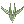
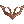
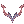

Juperos Quest
Jump to navigation
Jump to search
- For the custom content that gives access to Racing Caps, Ancient Hero Weapons and Shadow Gears, see Ancient Juperos: The Great Expedition.
| Requirements | |
|---|---|
| Base Level: | None |
| Starting Point: | Juperos |
| Items: | Crest Piece x2  Crest Piece x2  Crest Piece x2  Crest Piece x2 |
| Rewards | |
| Experience: | - |
- Access the 2nd floor of Juperos by going near the pedestal in the bottom left corner of the map. Once you walk near the middle of the platform, you'll get a dialogue, just select Ah, it's so nice.
- You now have to destroy all 3 Gate Switches; they can be found in the locations on the image below.
- Once all 3 are destroyed, a message will appear and you'll have 20 minutes to reach to the Core (center of the map).
- Once you're inside the core, you can go in either the left or the right portal (it doesn't matter which), you only have to do this Security Checkpoint once.
- Click to Crest Piece device (as shown on the image below) and insert the required Crest Piece. It will give you access to the next checkpoint.
- Walking a little forward will trigger the alarm and some mobs will appear. You'll have to kill all of them to be able to speak with the Crest Piece device. (Being hidden may not trigger the alarm, so you'll have to unhide.)
- Repeat the previous steps three times and you'll eventually reach a room with a Lever. Select Pull and you'll be sent to the elevator.
- This room looks exactly like the one you started in, but it's different. Go to the portal north of your location (it should be the only portal available).
- Keep walking up and you'll find a Switch. Select Pull the lever > Insert all of your Crest Pieces > Pull the lever.
- You'll have 2 minutes to clear all the mobs in this room, otherwise it will reset.
- Once you've killed all of the mobs, simply walk a little and you'll be warped into the elevator room.
- Inside the elevator, you'll have to kill a series of mobs multiple times. For each set of mobs, you have 2 minutes to kill them all, otherwise you'll be kicked out and you'll have to start the whole quest again (at step 4, where people usually get confused!).
- Repeat this 3 more times, and you'll see green messages from the core. You can walk out of the elevator by going in the bottom portal that appeared or just wait it out and you'll be warped automatically. You're now inside the Juperos Core.